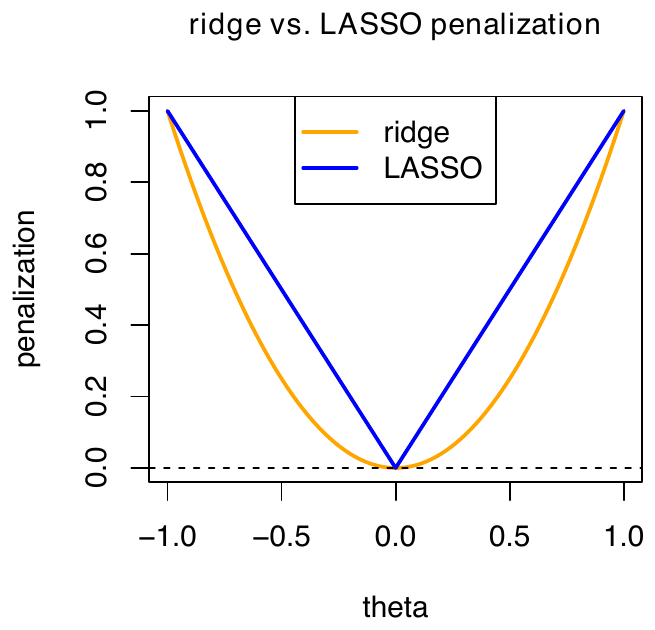
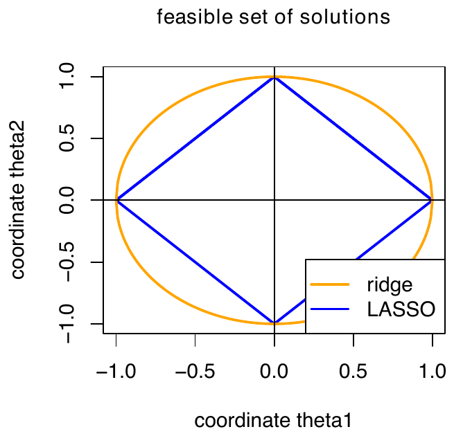
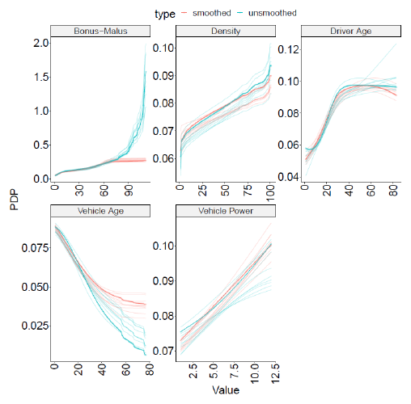
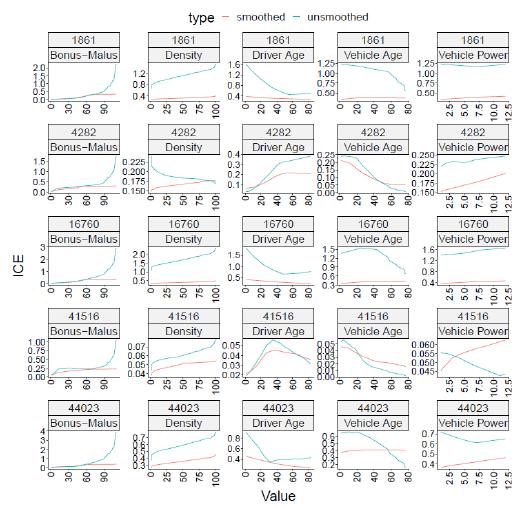
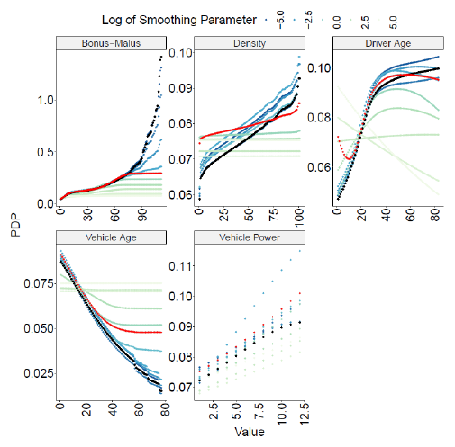

Lecture 8: ICEnet and Regularization
Deep Learning for Actuarial Modeling
Summer School ‘Lifelong Learning’
Università Cattolica del Sacro Cuore, Milano
Regularization is a model fitting technique that aims at variable shrinkage and variable selection during their estimation procedure. This can be achieved by penalizing extreme parameter values, making models generally more smooth (in some sense). This lecture discusses different regularization methods, and then presents the ICEnet architecture of Richman and Wüthrich (2024), which constrains neural-network predictions so that they are smooth and monotone with respect to selected risk factors, while keeping the deep-learning framework.
1 Regularization
1.1 Regularization: introduction
Generally speaking, a regression model \(\boldsymbol{X} \mapsto \mu(\boldsymbol{X})\) is correctly specified if it integrates all relevant covariates in the correct form, and if there is no redundant, missing or wrong covariate in the regression function:
redundant means that we include multiple covariates that essentially present the same information (e.g., being collinear);
missing means that we have forgotten important covariate information that would be available; and
wrong means that the covariate does not impact the response.
In real world problems, with unknown regression functions, this is part of covariate pre-processing, model selection and covariate selection.
One might be tempted to include any available information into the regression model, to ensure that nothing gets forgotten. However, fitting on finite samples, this is usually not a good strategy, because one may easily run into over-fitting issues, difficulties with collinearity in covariates, in identifiability issues, and, generally, in a poor predictive model because model fitting has not been successful.
Model complexity control is crucial in a successful model fitting and predictive modeling procedure. Typically, one aims for a sparse model, meaning that one aims for parsimony having the fewest necessary variables but still providing accurate predictions.
In practice, neither knowing the true model nor the (causal) regression structure and the factors that impact the responses, one often starts with slightly too large models, that one tries to shrink by regularization. Regularization penalizes model complexity and/or extreme regression coefficients.
1.2 Regularization techniques
We describe the most popular regularization techniques in this section; see Hastie, Tibshirani and Wainwright (2015).
Ridge regularization (also known as Tikhonov (1943) regularization or \(L^2\)-regularization);
LASSO regularization of Tibshirani (1996) (\(L^1\)-regularization);
Elastic net regularization of Zou and Hastie (2005);
Fused LASSO regularization of Tibshirani et al. (2005);
Group LASSO regularization of Yuan and Lin (2006);
Smoothly clipped absolute deviation (SCAD) regularization of Fan and Li (2001); we skip the details of SCAD in this notebook.
1.3 Regularization preparation
Consider a parametric regression estimation \(\mu_{\widehat{\vartheta}}(\cdot)\) by selecting from a class of candidate models \(\mathcal{M} = \{\mu_\vartheta\}_\vartheta\) being parametrized by \(\vartheta\).
The parameter \(\vartheta\) is assumed to be a \((r+1)\)-dimensional vector \[\vartheta = (\vartheta_0, \vartheta_1, \ldots, \vartheta_r)^\top \in \mathbb{R}^{r+1}.\] Typically, \((\vartheta_k)_{k=1}^r\) parametrizes the terms in \(\mu_\vartheta(\boldsymbol{X})\) involving the covariates \(\boldsymbol{X}\), and \(\vartheta_0\) is a parameter for the covariate-free part of the regression function determining the overall level of the regression function; \(\vartheta_0\) is the intercept/bias term, see GLM above.
This bias term \(\vartheta_0\) needs to be excluded from regularization to be able to calibrate the overall level of the model.
Denote by \(\vartheta_{\backslash 0} = (\vartheta_1, \ldots, \vartheta_r)^\top \in \mathbb{R}^r\) the parameter vector excluding the bias term \(\vartheta_0\).
1.4 Regularization: penalty function
Regularized parameter estimation is achieved by \[\widehat{\vartheta} ~\in~ \arg\min_\vartheta \left( \sum_{i=1}^n \frac{v_i}{\varphi}\, L(Y_i, \mu_\vartheta(\boldsymbol{X}_i)) + \lambda\, R(\vartheta_{\backslash 0}) \right),\] where \(R : \mathbb{R}^r \to \mathbb{R}_+\) is a penalty function and \(\lambda \geq 0\) is the regularization parameter.
We give the most common examples of penalty functions, below.
Noteworthy, we do not consider any scaling \(1/n\) in front of the sum. This scaling does not affect the optimal solution in the non-regularized case, but it makes the regularization parameter \(\lambda\) sample size independent.
1.5 Ridge regularization/regression
Ridge regression selects a squared \(L^2\)-norm penalty function for \(R\) \[\widehat{\vartheta}^{\,\rm ridge} ~\in~ \arg\min_\vartheta \left( \sum_{i=1}^n \frac{v_i}{\varphi}\, L(Y_i, \mu_\vartheta(\boldsymbol{X}_i)) + \lambda\, \|\vartheta_{\backslash 0}\|_2^2 \right).\]
Ridge regularization generally punishes large values in \((\vartheta_k)_{k=1}^r\), this is called shrinkage.
The level of shrinkage is determined by the regularization parameter \(\lambda \geq 0\), and an optimal choice is determined, e.g., by cross-validation.
This intuition of shrinkage indicates why we exclude the bias term \(\vartheta_0\) from regularization. Otherwise, we receive a statistically biased model.
1.6 LASSO regularization/regression
LASSO regularization (least absolute shrinkage and selection operator regularization) selects an \(L^1\)-norm penalty function for \(R\) \[\widehat{\vartheta}^{\,\rm LASSO} ~\in~ \arg\min_\vartheta \left( \sum_{i=1}^n \frac{v_i}{\varphi}\, L(Y_i, \mu_\vartheta(\boldsymbol{X}_i)) + \lambda\, \|\vartheta_{\backslash 0}\|_1 \right).\]
The behavior of LASSO regularization is fundamentally different from ridge regularization. This difference results from the fact that the \(L^2\)-norm is differentiable in the origin and the \(L^1\)-norm is not.

The consequence of this degeneracy of the \(L^1\)-norm in the origin is that some of the components of \((\vartheta_k)_{k=1}^r\) may be optimal in LASSO regularization if they are exactly equal to zero.
The more we increase the regularization parameter \(\lambda \uparrow \infty\), the more components of \((\vartheta_k)_{k=1}^r\) are optimal in precisely setting them to zero.
Increasing the regularization parameter \(\lambda\) leads to sparsity of non-zero values in \((\vartheta_k)_{k=1}^r\), and, consequently, there results a sparse regression model for large regularization parameters \(\lambda \gg 0\).
This can be interpreted as variable importance, i.e., for large \(\lambda\) only important covariate components survive.
Often, one performs variable selection with LASSO regularization, and then one fits a non-regularized model on the selected components.
1.7 Geometric interpretation of ridge vs. LASSO
Generally, these regularized regression problems can be interpreted geometrically using the method of Lagrange:
the feasible set of solutions in the ridge regression case is a \(L^2\)-ball, and
in the LASSO regression case a \(L^1\)-cube;
we refer to the next graph.
This geometric difference (having corners or not) precisely distinguishes sparsity of LASSO from shrinkage of ridge regression, i.e., this is related to the difference of these convex geometric sets having differentiable boundaries or not.
In fact, one considers orthogonal projections to the ball and cube, respectively, and sparsity in LASSO results from corner solutions in the cube case.

1.8 Best-subset selection regularization
Best-subset selection regularization selects a \(L^0\)-norm penalty function for \(R\) \[\widehat{\vartheta}^{\,\rm BSS} ~\in~ \arg\min_\vartheta \left( \sum_{i=1}^n \frac{v_i}{\varphi}\, L(Y_i, \mu_\vartheta(\boldsymbol{X}_i)) + \lambda \sum_{k=1}^r \mathbf{1}_{\{\vartheta_k \neq 0\}} \right).\]
This version is not used very often in applications mainly because optimizing the above is difficult, in fact, LASSO regularization is considered as a tractable version instead.
1.9 Elastic regularization
Elastic net regularization combines LASSO and ridge regularization \[\widehat{\vartheta}^{\,\rm net} \in \arg\min_\vartheta \left( \sum_{i=1}^n \frac{v_i}{\varphi} L(Y_i, \mu_\vartheta(\boldsymbol{X}_i)) + \lambda \left( \alpha \|\vartheta_{\backslash 0}\|_1 + (1-\alpha) \|\vartheta_{\backslash 0}\|_2^2 \right) \right),\] with \(\alpha \in [0,1]\).
Elastic net regularization overcomes some issues of LASSO, e.g., LASSO has the tendency to group effects by assigning similar weights to correlated covariate components.
1.10 Grouped covariates
The previous regularization proposals have been focusing on shrinking the regression parameters \((\vartheta_k)_{k=1}^r\) and/or to make regression models sparse by setting some of these parameters \(\vartheta_k\) exactly to zero.
In these regularization methods all terms and parameters \((\vartheta_k)_{k=1}^r\) are considered individually.
If we want to treat some of them jointly in a group, e.g., for a dummy coded categorical covariate, regularization should act simultaneously on all parameters that belong to that group.
We group the (categorical) covariates. Assume we have \(G\) groups \[\vartheta_{\backslash 0} = \left( \vartheta^{(1)}, \ldots, \vartheta^{(G)} \right)^\top \in \mathbb{R}^{d_1 + \cdots + d_G} = \mathbb{R}^r,\] where each group \(\vartheta^{(k)} \in \mathbb{R}^{d_k}\) contains \(d_k\) components of \(\vartheta_{\backslash 0}\).
1.11 Group LASSO regularization
Group LASSO regularization is obtained by solving \[\widehat{\vartheta} ~\in~ \arg\min_\vartheta \left( \sum_{i=1}^n \frac{v_i}{\varphi}\, L(Y_i, \mu_\vartheta(\boldsymbol{X}_i)) + \sum_{k=1}^G \lambda_k\, \|\vartheta^{(k)}\|_2 \right),\] for regularization parameters \(\lambda_k \geq 0\).
For increasing regularization parameters \(\lambda_k\), group LASSO regularization leads to sparsity in setting the entire block of covariates \(\vartheta^{(k)} \in \mathbb{R}^{d_k}\) simultaneously equal to zero.
1.12 Fused LASSO regularization
Assume there is an adjacency relation on the covariate components, i.e., the covariate component \(X_j\) is naturally embedded between the components \(X_{j-1}\) and \(X_{j+1}\), and we try to achieve a certain smoothness of the regression parameters for these covariates.
Fused LASSO regularization is obtained by solving \[\widehat{\vartheta} ~\in~ \arg\min_\vartheta \left( \sum_{i=1}^n \frac{v_i}{\varphi}\, L(Y_i, \mu_\vartheta(\boldsymbol{X}_i)) + \sum_{j=2}^r \lambda_j\, |\vartheta_j - \vartheta_{j-1}| \right),\] for regularization parameters \(\lambda_j \geq 0\).
The fused LASSO proposal enforces sparsity in the non-zero components, but also sparsity in the different regression parameter values for adjacent variables. It considers first order differences, and one could also consider second (or higher) order differences.
1.13 Positivity and monotonicity regularization
One may want to enforce that the parameters are positive \[\widehat{\vartheta} ~\in~ \arg\min_\vartheta \left( \sum_{i=1}^n \frac{v_i}{\varphi}\, L(Y_i, \mu_\vartheta(\boldsymbol{X}_i)) + \sum_{j=1}^r \lambda_j\, (0 - \vartheta_j)_+ \right).\]
Enforcement of a monotone increasing property \[\widehat{\vartheta} ~\in~ \arg\min_\vartheta \left( \sum_{i=1}^n \frac{v_i}{\varphi}\, L(Y_i, \mu_\vartheta(\boldsymbol{X}_i)) + \sum_{j=1}^r \lambda_j\, (\vartheta_{j-1} - \vartheta_j)_+ \right),\] with rectified linear unit (ReLU) function \[u \mapsto (u)_+ = \max\{u, 0\} = u\, \mathbf{1}_{\{u > 0\}}.\]
The above regularizes parameters \(\vartheta_{\backslash 0}\), but one could also enforce smoothness and monotonicity in the regression function components (e.g., mortality graduation); see Richman and Wüthrich (2024).
2 ICEnet: smoothness and monotonicity constraints for neural networks
The contribution is directly connected to regularization: instead of penalizing only the parameters, ICEnet penalizes the behavior of the predictive function on Individual Conditional Expectations (ICE).
2.1 Actuarial motivation
In actuarial pricing, tariff curves are often expected to satisfy structural requirements:
smoothness, to prevent abrupt premium changes that are difficult to justify to policyholders;
monotonicity, when actuarial knowledge implies a clear direction of risk.
In GLMs, these constraints can be imposed by directly modifying the model coefficients.
In neural networks, operating directly on the model coefficients or architecture to impose these constraints is less feasible.
ICEnet overcomes this limitation by imposing constraints on the model predictions, rather than on the network parameters themselves.
2.2 ICE and PDP: interpretability ingredients
Consider the fitted regression function \[\boldsymbol{X} = (X_1, \ldots, X_q)^\top ~\longmapsto~ \mu_{\widehat{\vartheta}}(\boldsymbol{X}),\] where \(q\) is the number of covariates.
For covariate \(j\), define the set of values \[\mathcal{A}_j = \left\{ a^j_1, \ldots, a^j_{K_j} \right\}.\]
If \(X_j\) is categorical, \(\mathcal{A}_j\) contains all its \(K_j\) possible levels.
If \(X_j\) is continuous, \(\mathcal{A}_j\) contains \(K_j\) representative values selected over its observed range, for example using quantile binning. These values are typically ordered as \(a^j_1 < \cdots < a^j_{K_j}\).
For each observation \(i\), define the pseudo-input \[\widetilde{\boldsymbol{X}}^{[j]}_i(u) = \left( X_{i,1}, \ldots, X_{i,j-1}, a^j_u, X_{i,j+1}, \ldots, X_{i,q} \right)^\top, \qquad u = 1, \ldots, K_j.\]
The ICE curve for observation \(i\) and covariate \(j\) is \[\mathrm{ICE}^{[j]}_i = \left[ \mu_{\widehat{\vartheta}}\left( \widetilde{\boldsymbol{X}}^{[j]}_i(1) \right), \ldots, \mu_{\widehat{\vartheta}}\left( \widetilde{\boldsymbol{X}}^{[j]}_i(K_j) \right) \right]^\top.\]
The corresponding Partial Dependence Plot (PDP) is the empirical average of the ICE curves: \[\mathrm{PDP}^{[j]} = \frac{1}{n} \sum_{i=1}^n \mathrm{ICE}^{[j]}_i.\]
2.3 Key idea of ICEnet
Select the covariates requiring smoothness \(\mathcal{S} \subset \{1, \ldots, q\}\) or monotonicity, \(\mathcal{M} \subset \{1, \ldots, q\}\).
For each observation \(\boldsymbol{X}_i\), generate pseudo-inputs \(\widetilde{\boldsymbol{X}}^{[j]}_i(u)\) by varying the constrained covariates.
Apply the same model \(\mu_{\widehat{\vartheta}}(\cdot)\) to:
observed inputs, to obtain \(\widehat{Y}_i\);
pseudo-inputs, to obtain ICE curves.
Fit the model using a compound loss:
predictive loss \(+\) smoothness penalty \(+\) monotonicity penalty.
2.4 Compound ICEnet loss
For each observation \(i\), the ICEnet uses the compound loss \[L(\vartheta; i) = L^D(Y_i, \mu_\vartheta(\boldsymbol{X}_i)) + L_2(\mu_\vartheta(\boldsymbol{X}_i)) + L_3(\mu_\vartheta(\boldsymbol{X}_i)),\] where \(L^D\) is the deviance loss associated with the considered regression problem.
\(L_2(\mu_\vartheta(\boldsymbol{X}_i))\) penalizes violations of smoothness for the covariates in \(\mathcal{S}\).
\(L_3(\mu_\vartheta(\boldsymbol{X}_i))\) penalizes violations of monotonicity for the covariates in \(\mathcal{M}\).
These penalty terms depend on non-negative regularization parameters \(\lambda_{sj}\) and \(\lambda_{mj}\), which control the trade-off between predictive accuracy and the strength of the imposed constraints.
2.5 Smoothness penalty
The ICEnet uses a Whittaker-Henderson type penalty to impose smoothness on the ICE outputs.
The first-order difference is defined for \(u = 2, \ldots, K_j\) as \[\Delta^1 \left( \mu_\vartheta \left( \widetilde{\boldsymbol{X}}^{[j]}_i(u) \right) \right) = \mu_\vartheta \left( \widetilde{\boldsymbol{X}}^{[j]}_i(u) \right) - \mu_\vartheta \left( \widetilde{\boldsymbol{X}}^{[j]}_i(u-1) \right).\]
For \(\tau \geq 2\), the \(\tau\)-th order difference is defined recursively for \(u = \tau+1, \ldots, K_j\) as \[\Delta^\tau \left( \mu_\vartheta \left( \widetilde{\boldsymbol{X}}^{[j]}_i(u) \right) \right) = \Delta^{\tau-1} \left( \mu_\vartheta \left( \widetilde{\boldsymbol{X}}^{[j]}_i(u) \right) \right) - \Delta^{\tau-1} \left( \mu_\vartheta \left( \widetilde{\boldsymbol{X}}^{[j]}_i(u-1) \right) \right).\]
The ICEnet penalizes squared third-order differences: \[L_2(\mu_\vartheta(\boldsymbol{X}_i)) = \sum_{j \in \mathcal{S}} \sum_{u=4}^{K_j} \lambda_{s,j} \left[ \Delta^3 \left( \mu_\vartheta \left( \widetilde{\boldsymbol{X}}^{[j]}_i(u) \right) \right) \right]^2.\]
2.6 Monotonicity penalty
Monotonicity is imposed by penalizing first differences with the undesired sign: \[L_3(\mu_\vartheta(\boldsymbol{X}_i)) = \sum_{j \in \mathcal{M}} \sum_{u=2}^{K_j} \lambda_{m,j} \max \left[ \delta_j \Delta^1 \left( \mu_\vartheta \left( \widetilde{\boldsymbol{X}}^{[j]}_i(u) \right) \right), 0 \right].\]
\(\delta_j = -1\) enforces a monotone increasing relationship.
\(\delta_j = +1\) enforces a monotone decreasing relationship.
If the ICE curve follows the required direction, the penalty is zero.
3 ICEnet example: French MTPL data
Goal: predict claims frequency.
Constrained variables:
| Covariate | Smoothness | Monotonicity | Direction |
|---|---|---|---|
| Driver age | 10 | 0 | - |
| Vehicle age | 1 | 0 | - |
| Bonus-malus | 1 | 100 | increasing |
| Density | 1 | 100 | increasing |
| Vehicle power | 1 | 100 | increasing |
- Setup: FCN with depth \(d = 3\), layer dimensions \((32, 16, 8)\), ReLU activation, embedding layers for unordered categorical variables and Adam with early stopping.
3.1 Main predictive results
| Model | Learn | Test |
|---|---|---|
| FCN | 0.4500 (0.000399) | 0.4511 (0.000663) |
| FCN nagging | 0.4491 | 0.4504 |
| ICEnet | 0.4510 (0.000340) | 0.4513 (0.000446) |
| ICEnet nagging | 0.4506 | 0.4508 |
Adding constraints worsens Poisson deviance only marginally.
The learning-test gap is smaller for ICEnet: the constraints also act as a form of regularization.
3.2 Partial dependence plot

3.3 ICE plots

3.4 PDPs under different constraint-parameter values

Copyright
© The Authors
This notebook and these slides are part of the project “AI Tools for Actuaries”. The lecture notes can be downloaded from:
https://papers.ssrn.com/sol3/papers.cfm?abstract_id=5162304
\(\,\)
- This material is provided to reusers to distribute, remix, adapt, and build upon the material in any medium or format for noncommercial purposes only, and only so long as attribution and credit is given to the original authors and source, and if you indicate if changes were made. This aligns with the Creative Commons Attribution 4.0 International License CC BY-NC.